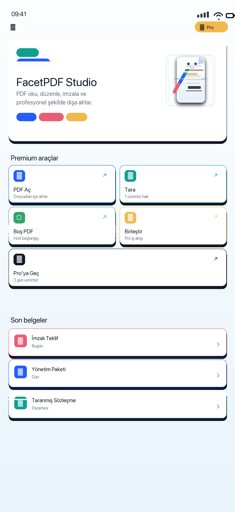
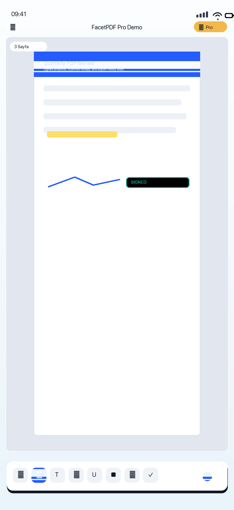
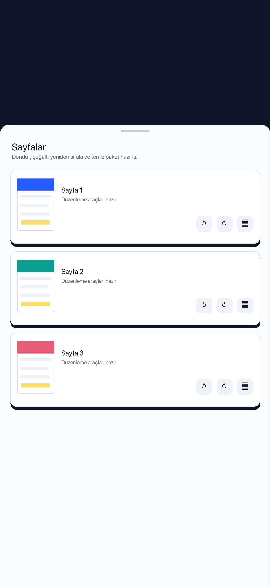
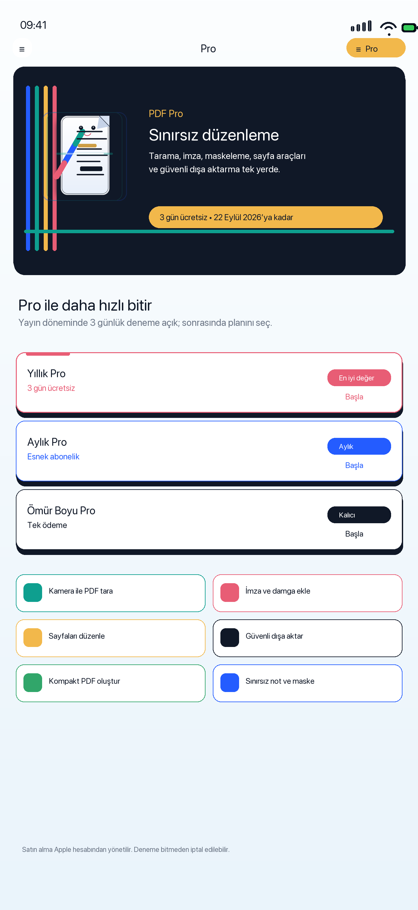
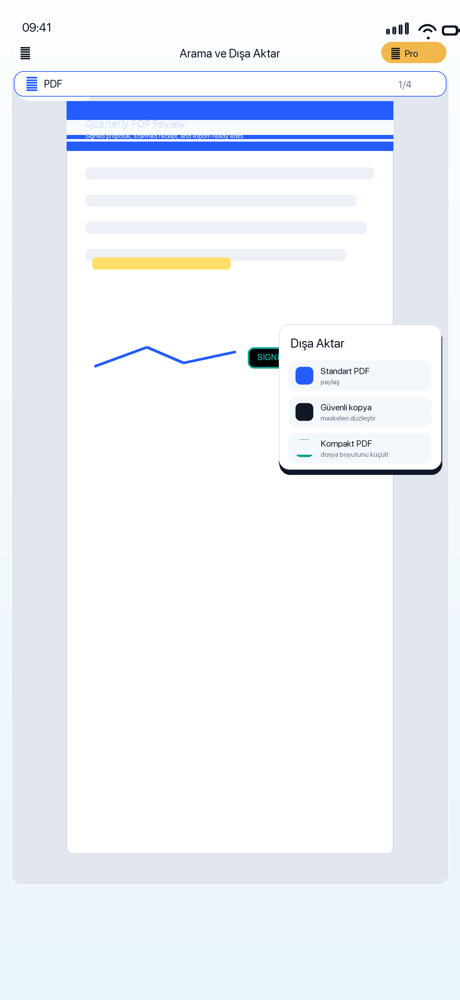
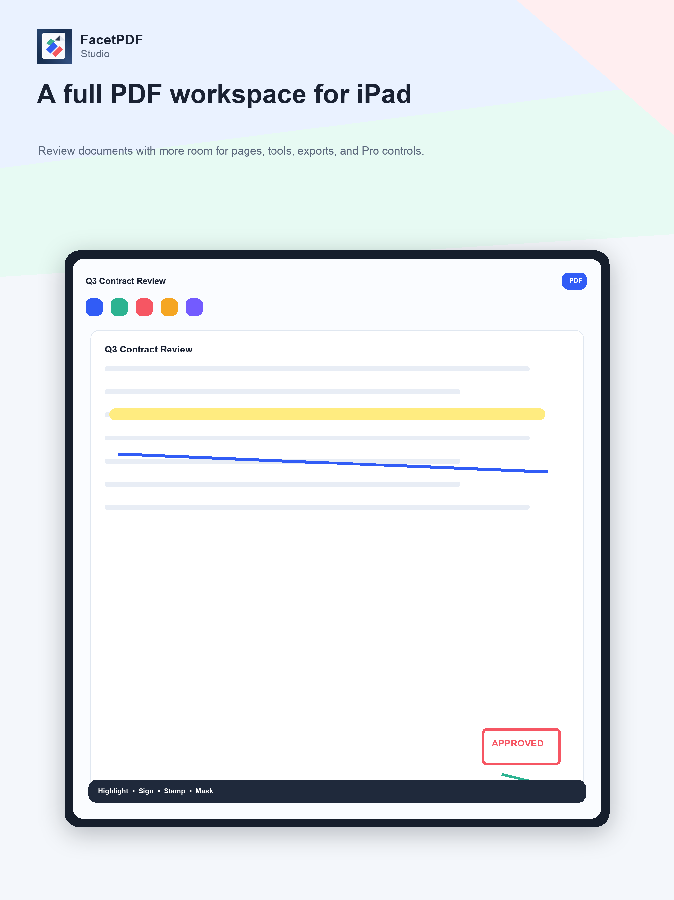
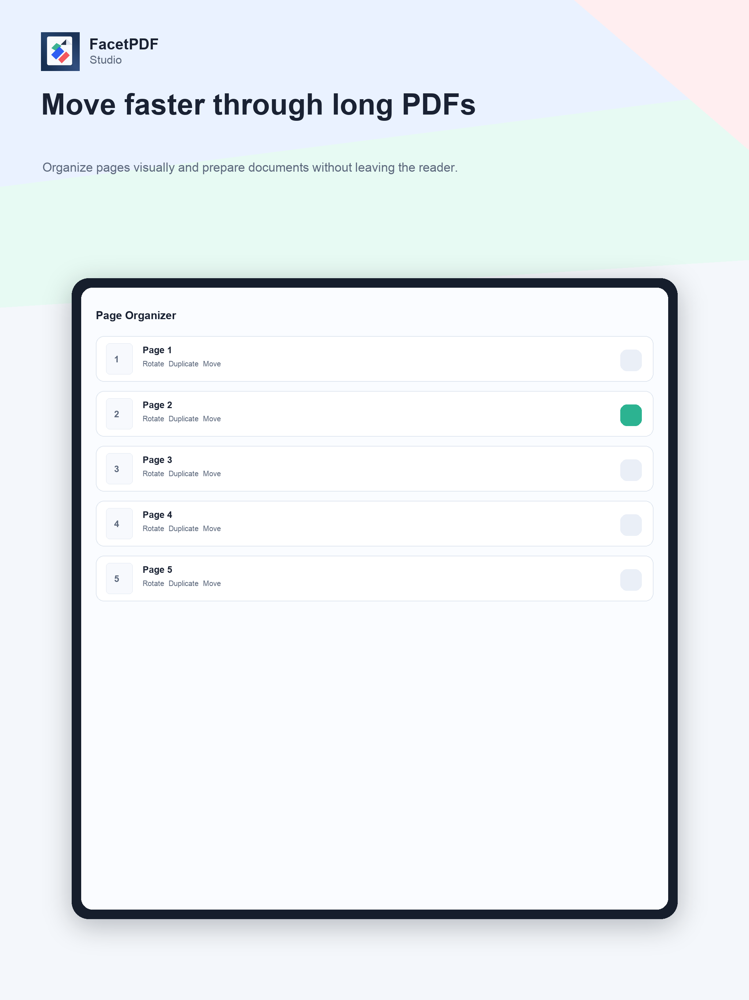
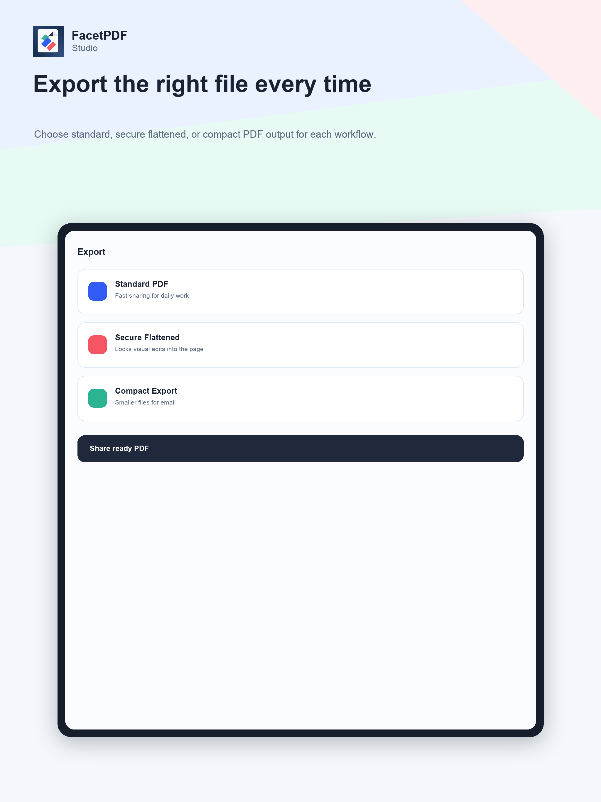
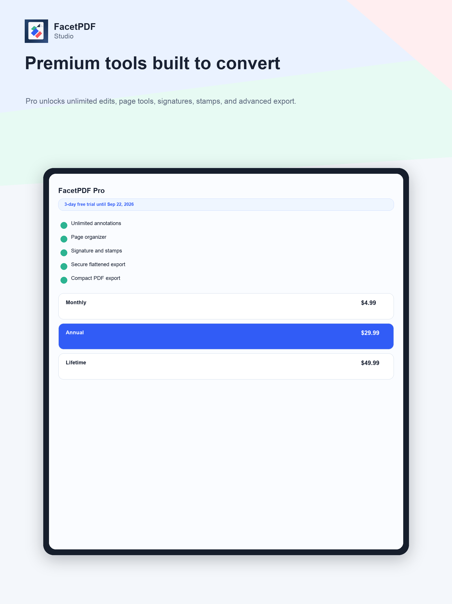

Read, scan, annotate, sign, organize, convert, compress, and export PDFs while keeping document work local to the device.
PDF oku, tara, not al, imzala, sayfaları düzenle, farklı dosyaları PDF'e çevir ve belge işlerini cihazında tut.

FacetPDF Studio turns iPhone and iPad into a private PDF workspace for everyday document work.
FacetPDF Studio, iPhone ve iPad'i günlük belge işleri için özel bir PDF çalışma alanına dönüştürür.
Documents stay on device unless the user shares or exports them through iOS. Belgeler, kullanıcı paylaşmadıkça veya dışa aktarmadıkça cihazda kalır.
Convert images, text, RTF, and HTML into PDF directly on device. Görsel, metin, RTF ve HTML dosyalarını cihaz üzerinde PDF'e çevirir.
Search, annotate, sign, stamp, organize pages, merge, compress, and export. Ara, not al, imzala, damgala, sayfaları düzenle, birleştir, sıkıştır ve dışa aktar.







